| Animation / pattern | Visual examples / static references | Used for | Avoid when | Recommendation |
|---|---|---|---|---|
| Rotating spinner | 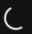 |
Routine loading, individual chat tool activities, background operations, and multiple active list items. | Completion is measurable, or another indicator already communicates the same operation at the same scope. | Default compact loading indicator. Use for subordinate activities instead of repeating PixelSpinner. |
| PixelSpinner grid | 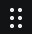 |
The primary "agent is working" status in the conversation or session the user is actively following. | Repeated tool rows, nested subagents, dense lists, or incidental loading. | Keep selectively. One primary PixelSpinner per task hierarchy; not one per activity beneath it. |
| Indeterminate loading bar Visual unification proposedView proposal |
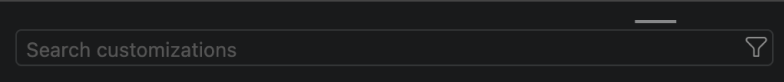 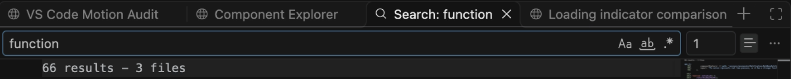 Playback not established by this still |
A whole view or region is loading and the completion amount is unknown. | A compact item needs a status icon, or real completion can be measured. | Keep as a region-level pattern. Document surface-specific appearance: above the Customizations search field versus below the Search Editor tabs. Same unknown-completion role, not necessarily identical visuals; not an interchangeable compact spinner. |
| Determinate progress bar |
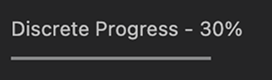 Supplied fixture screenshot 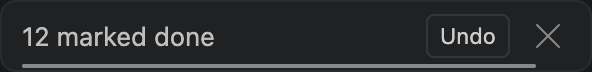 |
Showing measurable progress toward a known endpoint, so users can understand how much is complete or how much remains. | The total is unknown, progress would be invented, or a countdown creates artificial urgency. Never present elapsed time as work completed. | One bar pattern, two variants. Match completion progress to measured work and countdown to the actual deadline; never use a shared loading cycle. Label what the bar measures. Live Agents appearance of the work-progress variant remains unverified; its fixture shows fixed fill states. |
| Working status |
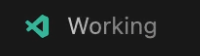 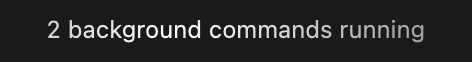 |
The primary, persistent AI working status. Two presentations of the same role: logo + shimmering text, or shimmering text only. | Repeated tool rows, completed messages, competing shimmers, or another primary indicator already covering the same operation. | One status pattern, two variants. The installed build supports a No Icon option. Keep one active shimmer per response; subordinate text stays static. Use solid, static text with Reduced Motion; do not duplicate the same status with PixelSpinner. |
| Dictation | 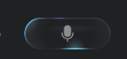 |
Showing that speech-to-text capture is active while the user dictates a message. | Microphone capture is inactive, permission is pending, or speech resources are still preparing. | Distinguish preparing from recording. Reserve capture feedback for actual microphone capture. Validate any audio-reactive motion against real input; retain a clear recording state and stop action with Reduced Motion. |
| Voice mode |
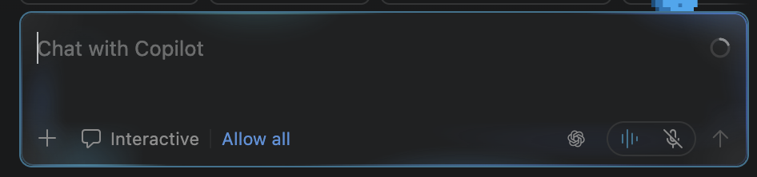 Supplied static screenshot |
Communicating listening and spoken output during a voice conversation. | Connecting, muted, idle, or disconnected; do not imply that audio is being captured or played when it is not. | Separate connecting, listening, and speaking. Validate signal-driven feedback with live audio, not a decorative loading loop. Preserve explicit states with Reduced Motion; stop audio visualization when inactive to avoid unnecessary CPU work. |
| Image-generation loading / reveal | 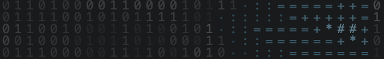 |
Communicating image generation and bridging the wait to the generated result. | Unrelated loading or visual decoration without a connection to the output. | Feature-specific loading with an expressive layer. Keep outside the purely decorative bucket; validate its added value and CPU cost. |
Performance: PixelSpinner cost more CPU in our browser prototype, especially with many instances. Native cost is unverified; the one-primary rule is a design constraint, not a measured CPU threshold.
Lifecycle and accessibility: Stop when work ends; pause when hidden or offscreen. Reduced Motion must retain understandable status without continuous animation.
Timing: Retain current 1,820 ms PixelSpinner and 1,500 ms rotating-spinner baselines for now. Shared 1,500 ms timing remains an experiment, not an adopted rule.
Scope: Bars and countdowns are included as related motion patterns, not small animated icons. Dictation and voice mode use supplied screenshots. Hypothetical spinner-in-button placements remain excluded.
The determinate progress reference is a user-supplied screenshot of Component Explorer's Discrete Progress - 30% fixture. Its code sets total(100) and worked(30); it is a fixed determinate state, not a live Agents capture.
The indeterminate loading bar row includes two user-supplied surface references: the short segment above Search customizations and the below-tab progress location in Search Editor. Customizations playback was previously verified in Component Explorer. Search Editor's implementation uses editor progress for a long-running search, but this supplied still does not establish that the pictured line is actively animating. Search-field focus outlines are not progress indicators.
Dictation uses a user-supplied recording screenshot. Voice mode uses one user-supplied screenshot as the shared reference for listening and speaking. Both features were tested live by the user. The images are static references, not playback recordings. Native CPU measurement remains outstanding.
Static PNG crops from local Component Explorer: DiscoverLoading, ProgressBars, BulkDoneNotificationAnimated, and CopilotGenerating. Both working-status references are user-supplied stills. Text-only progress was also checked in the live Agents app on October 26, 2026: with chat.experimental.persistentProgress set to Draw (Monochrome, No Icon), an approved sleep 20 test showed text-only progress and a shimmering Thinking label without the logo. The setting was reset to its original Draw default afterward. Earlier read-only inspection of installed Insiders 1.144.0-insider, commit 6e85dcfba62c2ea90aba2106eb3f071443b1a18e, confirmed percentage increments for cleanup scheduling; cleanup progress remains unobserved live. Spinner crops use product CSS and the Codicon font in the local comparison. Fixture references are not live-product screenshots; sizes are normalized for identification.
| Animation / pattern | Visual examples / static references | Used for | Avoid when | Recommendation |
|---|---|---|---|---|
| Confetti | Single captured celebration burst | Brief celebration of a meaningful, confirmed achievement. | Routine success, frequent actions, ongoing work, errors, or repeating celebration. | Keep sparingly; play once. Never make it the only confirmation of success. Omit the burst with Reduced Motion. |
| Animated pet | Optional character / static fixture frame | Optional personality and personalization. | Communicating operational status or competing with focused work. | Separate from loading. Keep optional and easy to disable; pause offscreen and respect Reduced Motion. |
Performance: Bound particle counts and duration; avoid perpetual decorative updates when the user cannot see them.
Keep or consolidate: A one-off is not automatically wasteful. Keep it only when its distinct benefit outweighs distraction, maintenance, and runtime cost.
Clean static crops from Component Explorer: SessionsList_Confetti (burst triggered in fixture data only) and newChatInput / WithPet. The confetti fixture reported a setup timeout, but its rendered action produced the captured particle burst. No real sessions were marked done.